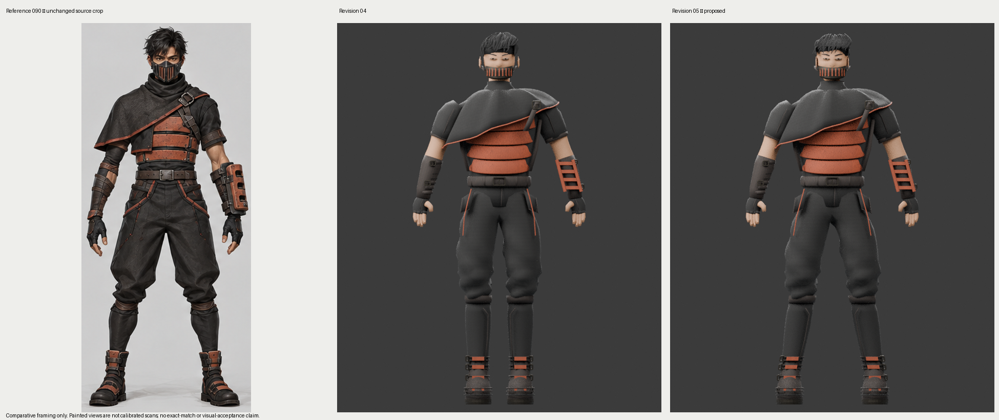
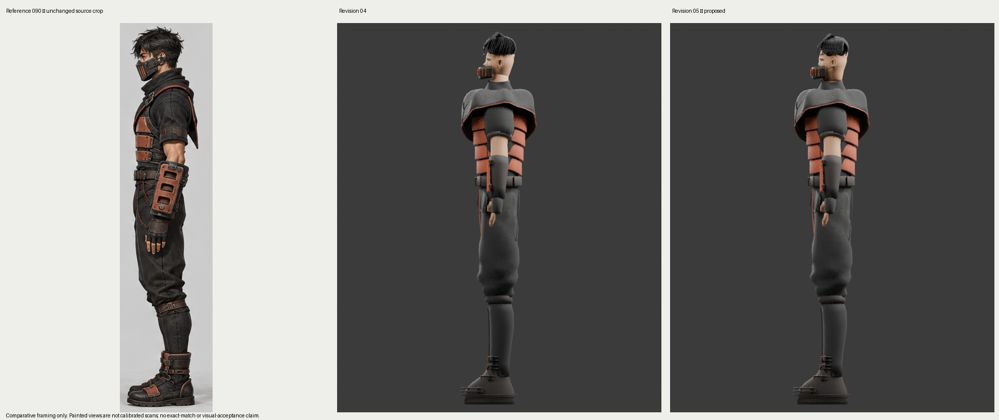
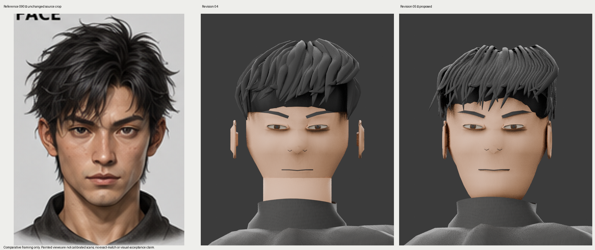
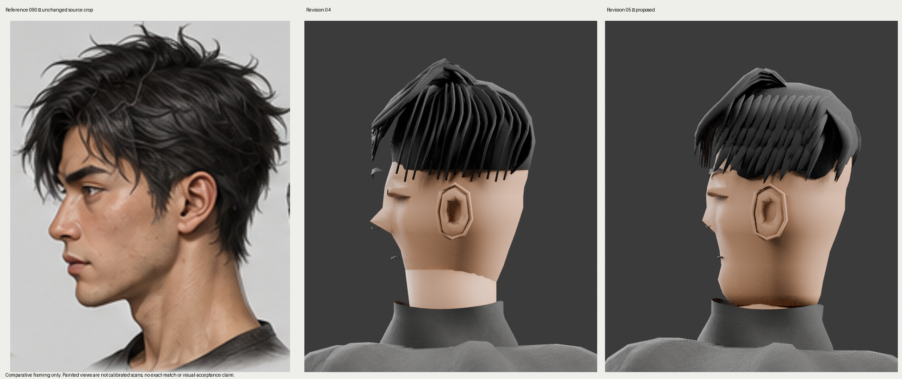
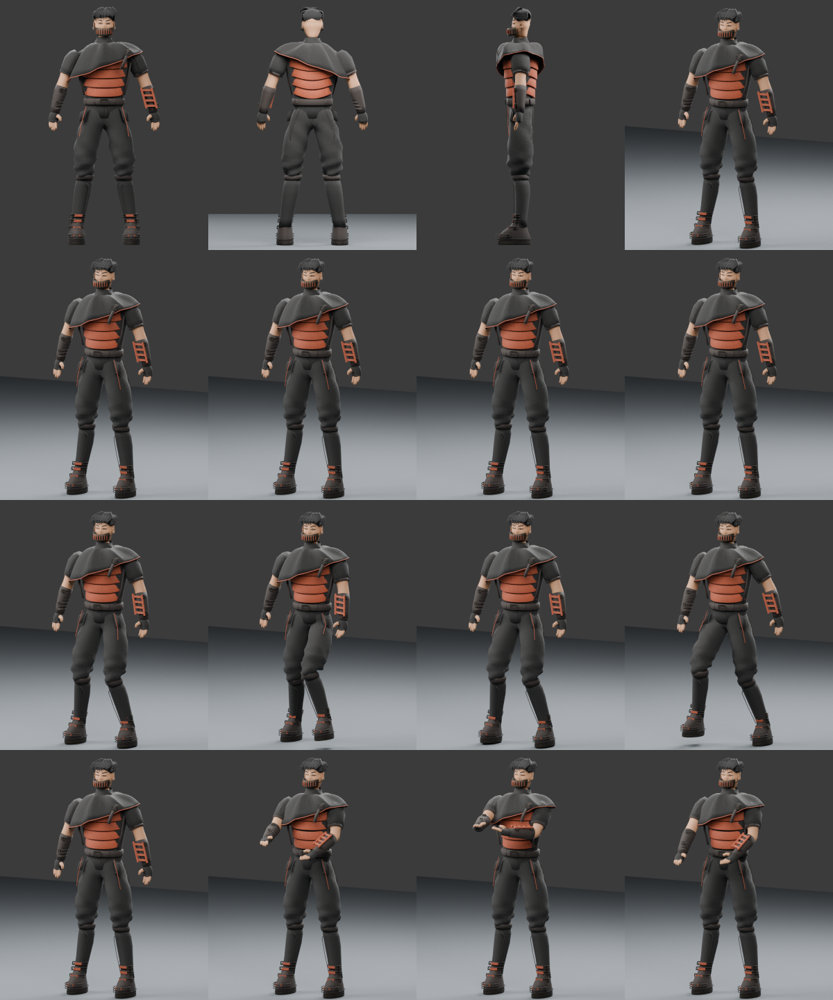

Source crops and real Blender CPU renders. No exact-match or visual-acceptance claim. Original artwork remains unchanged. The character is an articulated 3D mesh; these comparisons are review evidence.
Repairs and remaining gates · Frozen asset hashes · Independent imports · Approximate stance measurements




